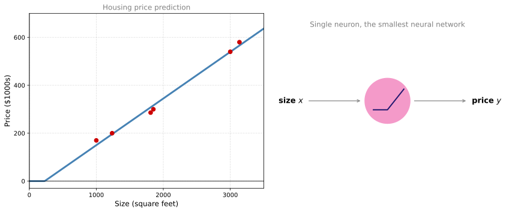
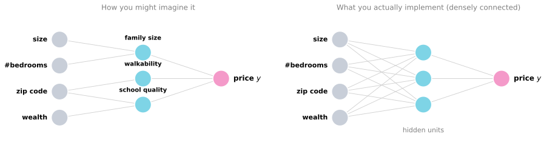
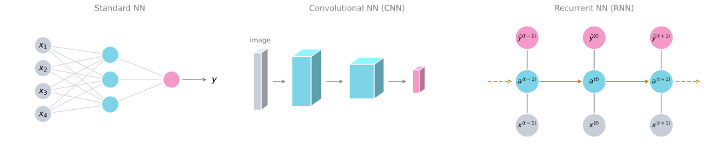
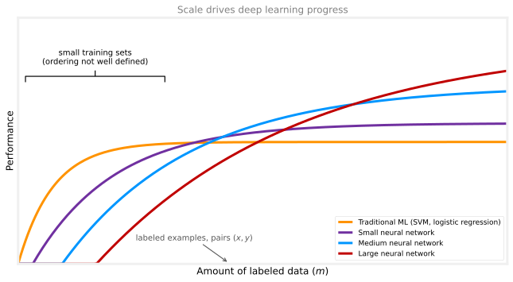
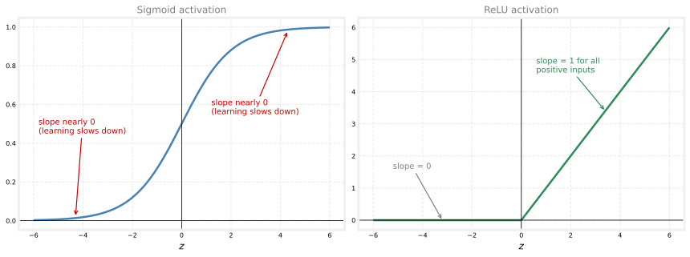
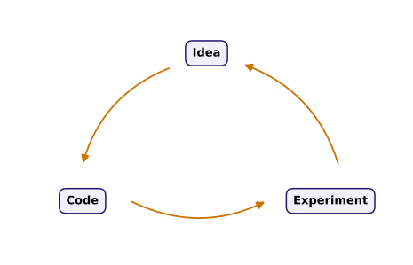

Introduction to Deep Learning
deep-learning
neural-networks
What a neural network is, how supervised learning creates value with deep learning, and why scale of data and computation made deep learning take off.
The term deep learning refers to training neural networks, sometimes very large neural networks. You already met neural networks at a high level in the Advanced Learning Algorithms course. This specialization starts again from the ground up and goes much deeper. You will build every piece yourself, starting with the most basic intuition of all. What exactly is a neural network?
What is a Neural Network?
Start with a housing price prediction example. You have a dataset with six houses. For each house you know the size (in square feet or square meters) and the price, and you want to fit a function that predicts the price of a house as a function of its size.
If you are familiar with linear regression, you might say we should put a straight line through this data. But we know that prices can never be negative, and a straight line fit will eventually dip below zero. So instead of the straight line, bend the curve so that it sits at zero on the left and then rises as a straight line to the right. The thick blue line becomes your function for predicting the price of the house from its size.
You can think of the function you just fit as a very simple neural network, almost the simplest possible one. The input to the network is the size of the house, which we call \(x\). It goes into a single node (the little circle), and the node outputs the predicted price, which we call \(y\). That little circle is a single neuron. All the neuron does is take the size as input, compute the linear function, take the maximum with zero, and output the estimated price.
In the neural network literature you will see this bent function a lot. It is called a ReLU function, which stands for rectified linear unit.
\[ \text{ReLU}(z) = \max(0, z) \]
“Rectify” just means taking the maximum of zero and the input, which is why the function has this shape. You do not need to worry about ReLU units for now. It is simply something you will see again later in this course, and you already met it briefly on the activation functions page.
Stacking Neurons
If a single neuron is a tiny neural network, a larger neural network is formed by taking many single neurons and stacking them together. Think of each neuron as a single Lego brick. You get a bigger network by stacking many bricks.
Suppose that instead of predicting the price from the size alone, you now have other features. You know the number of bedrooms, and you might reason that size and number of bedrooms together determine whether a house fits a given family size. You know the zip code (postal code), which might tell you walkability. Can you walk to the grocery store or to school, or do you need to drive? The zip code together with the wealth of the neighborhood might tell you the school quality. Finally, people decide how much they are willing to pay based on the things that matter to them, in this case family size, walkability, and school quality, and that helps predict the price.

Each of the little circles in the middle can be one of those ReLU units, or some other slightly non-linear function. In this example, \(x\) is all four inputs and \(y\) is the price you are trying to predict. By stacking together a few single neurons, you now have a slightly larger neural network.
Here is the remarkable part about how you manage a neural network. When you implement it, you only give it the input \(x\) and the output \(y\) for a number of examples in your training set. Everything in the middle, the network figures out by itself.
Notice the difference between the two panels above. In the left panel, we told a story where the first middle node means “family size” and depends only on size and number of bedrooms. In the network you actually implement (the right panel), each of the middle circles, called hidden units, takes all four input features as its inputs. Rather than dictating what each node should represent, we say to the network, “you decide whatever you want this node to be, and we will give you all four input features to compute whatever you want.” Because every input feature is connected to every one of the circles in the middle, we say the input layer and the middle layer are densely connected.
The remarkable thing about neural networks is that, given enough training examples with both \(x\) and \(y\), they are very good at figuring out functions that accurately map from \(x\) to \(y\).
As you build your own neural networks, you will probably find them most useful and most powerful in supervised learning settings, where you take an input \(x\) and map it to some output \(y\), exactly like the housing price prediction example. The next section goes over more examples of supervised learning.
Review Questions
1. In the housing example, why is the straight line from linear regression replaced with a line that bends at zero?
TipAnswer
Prices can never be negative, but a straight line fit eventually becomes negative for small sizes. Bending the curve so it sits at zero and then rises as a straight line keeps every prediction non-negative. The resulting shape is exactly the ReLU function.
1. ReLU stands for which of the following?
- Representation Linear Unit
- Rectified Last Unit
- Recognition Linear Unit
- Rectified Linear Unit
TipAnswer
d. ReLU stands for rectified linear unit. It computes \(\max(0, z)\), and “rectify” means taking the maximum of zero and the input.
1. When you train a neural network, what do you provide and what does the network figure out by itself?
TipAnswer
You provide only the input \(x\) and the output \(y\) for a number of training examples. All of the things in the middle (what each hidden unit computes) the network figures out by itself during training.
1. What does it mean that the input layer and the middle layer are “densely connected”?
TipAnswer
Every input feature is connected to every hidden unit in the middle layer. No hidden unit is restricted to a hand-picked subset of the inputs; each one receives all four input features and computes whatever it wants from them.
Supervised Learning with Neural Networks
There has been a lot of hype about neural networks, and perhaps some of that hype is justified given how well they work. But so far, almost all the economic value created by neural networks has been through one type of machine learning, called supervised learning. In supervised learning you have some input \(x\) and you want to learn a function mapping to some output \(y\). The housing price prediction application is one example. Here are some others where neural networks have been applied very effectively.
| Input (\(x\)) | Output (\(y\)) | Application | Network type |
|---|---|---|---|
| Home features | Price | Real estate | Standard NN |
| Ad, user information | Click on ad? (0 or 1) | Online advertising | Standard NN |
| Image | Object identity (1, …, 1000) | Photo tagging | CNN |
| Audio clip | Text transcript | Speech recognition | RNN |
| English sentence | Chinese sentence | Machine translation | RNN |
| Image, radar information | Position of other cars | Autonomous driving | Custom / hybrid |
Possibly the single most lucrative application of deep learning today is online advertising. Maybe not the most inspiring, but certainly lucrative. By inputting information about an ad and about the user, neural networks have gotten very good at predicting whether you will click on that ad. Showing users the ads they are most likely to click on has a direct impact on the bottom line of some of the largest online advertising companies.
Computer vision has also made huge strides in the last several years, mostly due to deep learning. You might input an image and want to output an index from 1 to 1,000 saying which of a thousand possible objects the picture shows, for example for photo tagging. In speech recognition you can input an audio clip and have the network output a text transcript. In machine translation a network can input an English sentence and directly output, say, a Chinese sentence. And in autonomous driving you might input an image of what is in front of the car together with some information from a radar, and a network can be trained to tell you the position of other cars on the road, a key component of autonomous driving systems.
A lot of this value creation comes from cleverly selecting what \(x\) and \(y\) should be for your particular problem, and then fitting the supervised learning component into a bigger system such as an autonomous vehicle.
Different Architectures for Different Data
It turns out that slightly different types of neural networks are useful for different applications.
- For the real estate and online advertising applications, we use a fairly universal, standard neural network architecture like the one from the previous section.
- For image applications we often use convolutional neural networks (CNNs).
- For sequence data we often use a recurrent neural network (RNN). Audio has a temporal component (it plays out over time), so it is most naturally represented as a one-dimensional time series. Language also arrives one word at a time, so it too is most naturally represented as sequence data, and more complex versions of RNNs are often used for it.
- For more complex applications such as autonomous driving, where you have an image (which suggests a CNN) together with radar information (which is something quite different), you might end up with a more custom or hybrid architecture.
In the literature you might have seen pictures like these.

The standard network is the kind you saw in the housing example. The convolutional network passes an image through a sequence of volumes of hidden units. The recurrent network processes a sequence one step at a time, passing its activation forward from each time step to the next (the orange arrows), which is what makes it a natural fit for temporal data. You will learn exactly what these pictures mean, and how to implement each architecture, in later courses of this specialization.
Structured and Unstructured Data
You might also have heard about machine learning applied to both structured data and unstructured data.
Structured data basically means databases of data, where each feature has a very well defined meaning. In housing price prediction you might have a database with columns for the size and the number of bedrooms. In ad click prediction you might have information about the user (such as their age), information about the ad, and the label \(y\) you are trying to predict.
Unstructured data refers to things like raw audio, images, or text, where the features might be the pixel values in an image or the individual words in a piece of text. Historically it has been much harder for computers to make sense of unstructured data. The human race, in contrast, evolved to be very good at understanding audio cues and images (text was a more recent invention, but people are really good at interpreting that too).
One of the most exciting things about the rise of neural networks is that, thanks to deep learning, computers are now much better at interpreting unstructured data than they were just a few years ago. This creates opportunities for many new applications in speech recognition, image recognition, and natural language processing on text.
Because people have a natural empathy for unstructured data, neural network successes on it get more attention in the media. It is just cool when a network recognizes a cat. We all like that, and we all know what it means. But a lot of the short term economic value that neural networks create has also been on structured data, such as much better advertising systems, better product recommendations, and a much better ability to process the giant databases many companies have in order to make accurate predictions from them.
In this course, most techniques apply to both structured and unstructured data. For the purposes of explaining the algorithms, the examples will draw a little more on unstructured data.
Review Questions
1. Drag each network type to the kind of data or application it is typically used for.
TipAnswer
- Standard NN → Structured, tabular data such as home features for real estate or user and ad information for online advertising.
- CNN → Image data, such as recognizing which of 1,000 objects a photo shows.
- RNN → One-dimensional sequence data with a temporal component, such as audio or language.
- Custom hybrid → Complex applications that mix very different inputs, such as an image plus radar information for autonomous driving.
1. What type of machine learning has created almost all of the economic value from neural networks so far?
TipAnswer
Supervised learning, where you have an input \(x\) and learn a function that maps it to an output \(y\).
1. Give two examples of structured data and two examples of unstructured data.
TipAnswer
Structured data comes from databases where each feature has a well defined meaning, for example the size and number of bedrooms of a house, or the age of a user in an ad click predictor. Unstructured data includes raw audio, images, and text, where the features are things like pixel values or individual words.
1. Media coverage focuses on neural network successes with unstructured data (like recognizing a cat). Where has much of the short term economic value actually been created?
TipAnswer
On structured data, through better advertising systems, better product recommendations, and a much better ability to process the giant databases many companies have in order to make accurate predictions.
1. Features of animals, such as weight, height, and color, are used for classification between cats, dogs, or others. This is an example of “structured” data, because the features can be represented as arrays in a computer. True or False?
TipAnswer
True. The data can be represented by columns in a table, which makes it structured data, unlike images of the animals.
1. Which of the following are examples of structured data? Choose all that apply.
- A dataset of weight, height, age, the sugar level in the blood, and arterial pressure.
- A set of audio recordings of a person saying a single word.
- A dataset with short poems.
- A dataset with the zip code, income, and name of a person.
TipAnswer
a and d. Both can be presented as tables with well defined columns, which is what makes data structured. Audio recordings and poems are unstructured data.
1. Why is an RNN (recurrent neural network) used for machine translation, say translating English to French? Check all that apply.
- It can be trained as a supervised learning problem.
- It is strictly more powerful than a convolutional neural network (CNN).
- It is applicable when the input and output are sequences (for example, a sequence of words).
- RNNs represent the recurrent process of Idea, Code, Experiment, Idea, and so on.
TipAnswer
a and c. The network can be trained on many pairs of sentences \(x\) (English) and \(y\) (French), and an RNN can map from a sequence of English words to a sequence of French words. RNNs are not strictly more powerful than CNNs, and the Idea, Code, Experiment cycle has nothing to do with the “recurrent” in RNN.
Why is Deep Learning Taking Off?
If the basic technical ideas behind deep learning and neural networks have been around for decades, why are they only now taking off? Understanding the main drivers behind the rise of deep learning will also help you spot the best opportunities to apply it within your own organization.
The picture that best answers this question plots the amount of data available for a task on the horizontal axis, and the performance of the learning algorithm on the vertical axis. Performance here could be the accuracy of a spam classifier, an ad click predictor, or a neural network that estimates the position of other cars for a self-driving car.

If you plot the performance of a traditional learning algorithm such as a support vector machine or logistic regression as a function of the amount of data, performance improves for a while as you add more data, but after a while it pretty much plateaus. Traditional algorithms did not know what to do with huge amounts of data.
What happened in our society over roughly the last two decades is that, for a lot of problems, we went from having a relatively small amount of data to having a fairly large amount of data. This came from the digitization of society. So much human activity is now in the digital realm. We spend time on computers, on websites, and on mobile apps, and activity on digital devices creates data. Inexpensive cameras built into cell phones, accelerometers, and all sorts of sensors in the Internet of Things also keep collecting more and more data. For many applications we accumulated far more data than traditional learning algorithms could effectively use.
Neural networks changed the picture. A small neural network does somewhat better than the traditional curve. A medium sized network does better still. And if you train a very large neural network, performance often just keeps getting better and better as data grows.
Two observations follow from this figure. If you want to reach the very high levels of performance, you need two things. First, you need to be able to train a big enough neural network to take advantage of the huge amount of data. Second, you need to be far out on the horizontal axis, meaning you need a lot of data. So we often say that scale has been driving deep learning progress. Scale means both the size of the neural network (many hidden units, many parameters, many connections) and the scale of the data. In fact, one of the most reliable ways to get better performance today is often to either train a bigger network or throw more data at it. That only works up to a point, because eventually you run out of data, or the network is so big that it takes too long to train. But just improving scale has taken us a long way.
NoteNotation
The horizontal axis is technically the amount of labeled data, meaning training examples where we have both the input \(x\) and the label \(y\). Throughout this course, lowercase \(m\) denotes the size of the training set, the number of training examples.
One more detail about this figure. In the regime of smaller training sets (the left side), the relative ordering of the algorithms is not very well defined. With little data, performance depends much more on your skill at hand-engineering features and on other details of the algorithms. Someone training an SVM who is motivated to hand-engineer features could well beat a large neural network there. It is only in the big data regime, far to the right, that we consistently see large neural networks dominating the other approaches.
The same teaching picture appears in Why Neural Networks Took Off Now in the machine learning notes, which also points to scaling studies (Hestness et al. 2017, Kaplan et al. 2020) that measured this trend on real tasks.
Algorithms and Computation
In the early days of the modern rise of deep learning, it was scale of data and scale of computation (our ability to train very large networks on CPUs or GPUs) that enabled progress. Increasingly, especially in recent years, there has been tremendous algorithmic innovation as well. Interestingly, many of the algorithmic innovations have been about making neural networks run much faster.
A concrete example is the switch from the sigmoid function to the ReLU function as the activation inside the network.

One of the problems of using the sigmoid function in machine learning is that there are regions (the flat tails) where the slope of the function, the gradient, is nearly zero. When you implement gradient descent and the gradient is nearly zero, the parameters change very slowly, so learning becomes really slow. With the ReLU function, the gradient is equal to 1 for all positive values of the input, so the gradient is much less likely to gradually shrink to zero. Just switching from the sigmoid function to the ReLU function made gradient descent work much faster. It is an example of a relatively simple algorithmic innovation whose ultimate impact was on computation, because it allowed bigger networks to be trained in reasonable time.
The other reason fast computation matters is that the process of training a network is very iterative. You have an idea for a neural network architecture, you implement the idea in code, you run an experiment that tells you how well the network does, and then you go back and change the details. You go around this circle over and over.

When your network takes a long time to train, it takes a long time to go around this cycle, and there is a huge difference in productivity between being able to try an idea and see it work in ten minutes (or at most a day) versus having to train for a month. If you get a result back quickly, you can try many more ideas, and you are much more likely to discover a network that works well for your application. Faster computation has helped practitioners and researchers iterate much faster and improve ideas much faster, which has been a huge boon to the whole deep learning research community.
The good news is that all three forces are still working powerfully.
- Data. Society is still producing more and more digital data.
- Computation. Specialized hardware such as GPUs and faster networking keep improving our ability to train very large networks.
- Algorithms. The research community keeps delivering innovation on the algorithms front.
Because of this, we can be optimistic that deep learning will keep getting better for many years to come.
Review Questions
1. According to the scale picture, what two things do you need to reach very high levels of performance?
TipAnswer
You need to train a big enough neural network and you need a lot of labeled data (to be far to the right on the horizontal axis). Together these are “scale,” which has been driving deep learning progress.
1. What does \(m\) denote in this course?
TipAnswer
Lowercase \(m\) denotes the size of the training set, the number of training examples. Each training example is a pair of an input \(x\) and a label \(y\).
1. Why do traditional algorithms sometimes beat large neural networks when the training set is small?
TipAnswer
In the small training set regime the relative ordering of algorithms is not well defined. Performance depends much more on skill at hand-engineering features and on other details of the algorithms. For example, a carefully feature-engineered SVM can outperform a large neural network there. Large networks dominate consistently only in the big data regime.
1. Why did switching from the sigmoid activation to ReLU make training faster?
TipAnswer
The sigmoid function has flat tails where the gradient is nearly zero, and gradient descent updates the parameters very slowly there. ReLU has a gradient of 1 for all positive inputs, so the gradient is much less likely to shrink toward zero, and gradient descent works much faster.
1. Beyond training bigger networks, why does fast computation matter so much in practice?
TipAnswer
Building a network is iterative. You go around the Idea, Code, Experiment cycle over and over. When results come back in minutes instead of a month, you can try far more ideas and are much more likely to find a network that works well for your application.
1. Which of the following best describes the role of AI in the expression “an AI-powered society”?
- AI controls the power grids for energy distribution, so all the power needed for industry and in daily life comes from AI.
- AI helps to create a more efficient way of producing energy to power industries and personal devices.
- AI is an essential ingredient in realizing tasks, in industry and in personal life.
TipAnswer
c. In an AI-powered society, AI plays a fundamental role in completing most tasks, in industry and in personal life. The “power” is a metaphor, like electricity transforming every major industry, not literal electric power.
1. Recall the Idea, Code, Experiment cycle of iterating over different machine learning ideas. Which of the statements below are true? Check all that apply.
- Recent progress in deep learning algorithms has allowed us to train good models faster, even without changing the CPU/GPU hardware.
- Faster computation can help speed up how long a team takes to iterate to a good idea.
- Being able to try out ideas quickly allows deep learning engineers to iterate more quickly.
- It is faster to train on a big dataset than on a small dataset.
TipAnswer
a, b, and c. Switching from sigmoid to ReLU activation functions is an example of an algorithmic improvement that allows faster training without new hardware, faster computation shortens the Idea, Code, Experiment loop, and quick experiments let engineers iterate more quickly. Statement d is false. A bigger dataset generally takes longer to train on, not less.
1. When experienced deep learning engineers work on a new problem, they can usually use insight from previous problems to train a good model on the first try, without needing to iterate multiple times through different models. True or False?
TipAnswer
False. Finding the characteristics of a good model is key to good performance. Although experience can help, it still requires multiple iterations through the Idea, Code, Experiment cycle to build a good model.
1. Assuming the trends described in the scale figure hold, which of the following are true? Check all that apply.
- Increasing the size of a neural network generally does not hurt an algorithm’s performance, and it may help significantly.
- Increasing the training set size generally does not hurt an algorithm’s performance, and it may help significantly.
- Decreasing the size of a neural network generally does not hurt an algorithm’s performance, and it may help significantly.
- Decreasing the training set size generally does not hurt an algorithm’s performance, and it may help significantly.
TipAnswer
a and b. According to the trends in the figure, bigger networks usually perform better than smaller ones, and bringing more data to a model is almost always beneficial.
Course Roadmap
This is the first of the five courses in the Deep Learning Specialization, and it teaches the most important foundations, really the most important building blocks, of deep learning. By the end of this course you will know how to build and get to work a deep neural network. The material is organized in four parts.
- Introduction to deep learning. This page. What a neural network is, where supervised learning creates value, and why deep learning is taking off.
- Basics of neural network programming. The structure of the forward propagation and backward propagation steps of the algorithm, and how to implement neural networks efficiently. This part also comes with the first programming exercises, so you can implement the algorithms yourself and see them work.
- Shallow neural networks. You will code up a neural network with a single hidden layer and learn all the key concepts needed to get a network working.
- Deep neural networks. Finally, you will build a deep neural network with many layers and see it work for yourself.
Each section of these notes ends with review questions. Use them to double check your understanding, and if you do not get all the answers right the first time, try again until you do.
Review Questions
1. What are the four parts of this course, in order?
TipAnswer
First an introduction to deep learning, then the basics of neural network programming (forward and backward propagation, efficient implementation), then shallow neural networks with a single hidden layer, and finally deep neural networks with many layers.